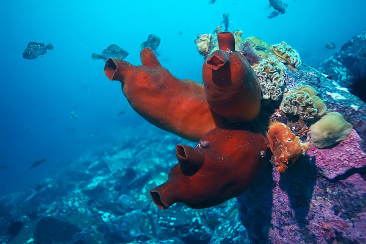
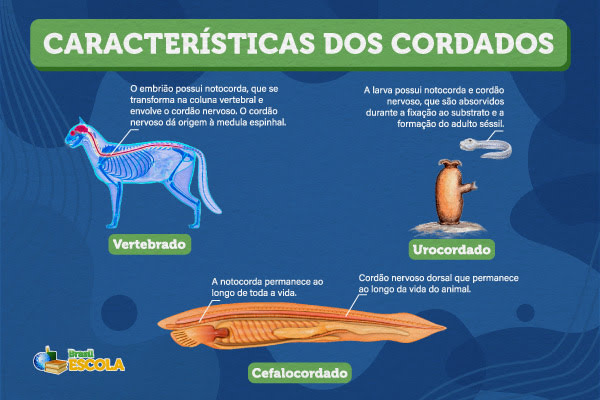
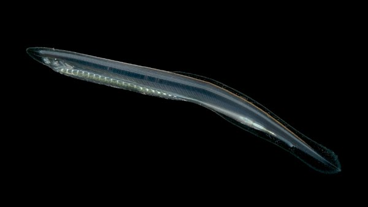
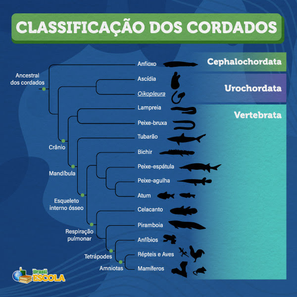
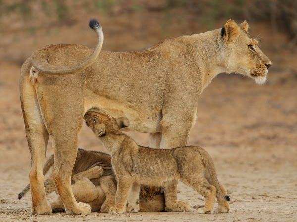

1. Urocordados (Tunicados)
Marinhos e filtradores. Apenas as larvas possuem todas as características. Os adultos são sésseis e perdem a notocorda, a cauda e o tubo nervoso.
A Origem, Sustentação e a Formação dos Vertebrados
Do período Cambriano à conquista da Terra

Surgimos no período Cambriano, há mais de 500 milhões de anos! Somos animais triblásticos, celomados e deuterostômios. Para ser um cordado, o animal precisa apresentar cinco estruturas em alguma fase da vida:

Marinhos e filtradores. Apenas as larvas possuem todas as características. Os adultos são sésseis e perdem a notocorda, a cauda e o tubo nervoso.

O anfioxo é o grande modelo. É um pequeno animal marinho que mantém todas as cinco características visíveis durante toda a sua vida adulta.

Possuem crânio protegendo o encéfalo. Dividem-se em Agnatos (sem mandíbula, ex: lampreias) e Gnatostomados (peixes, anfíbios, répteis, aves e mamíferos).

Além da reprodução complexa (com o surgimento da fecundação interna e cuidado parental nos grupos mais derivados), os cordados contam com um sistema fisiológico altamente especializado para dominar a água, a terra e o ar.